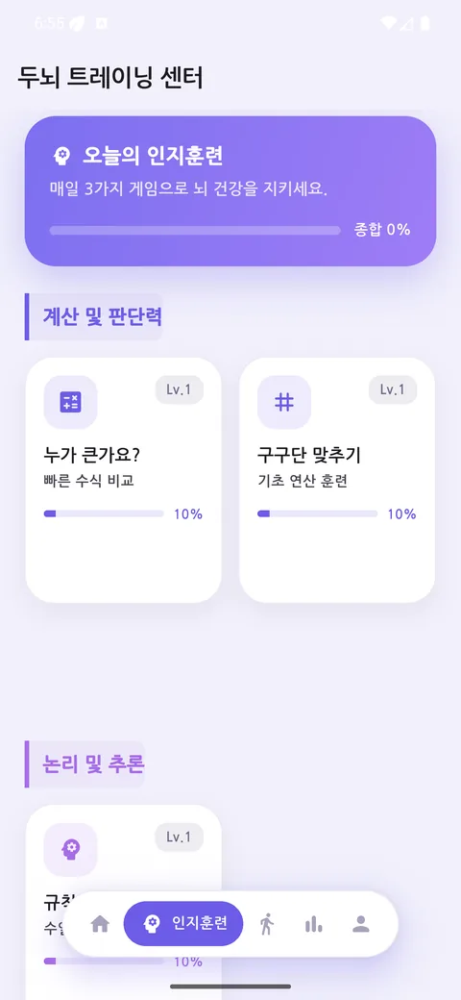
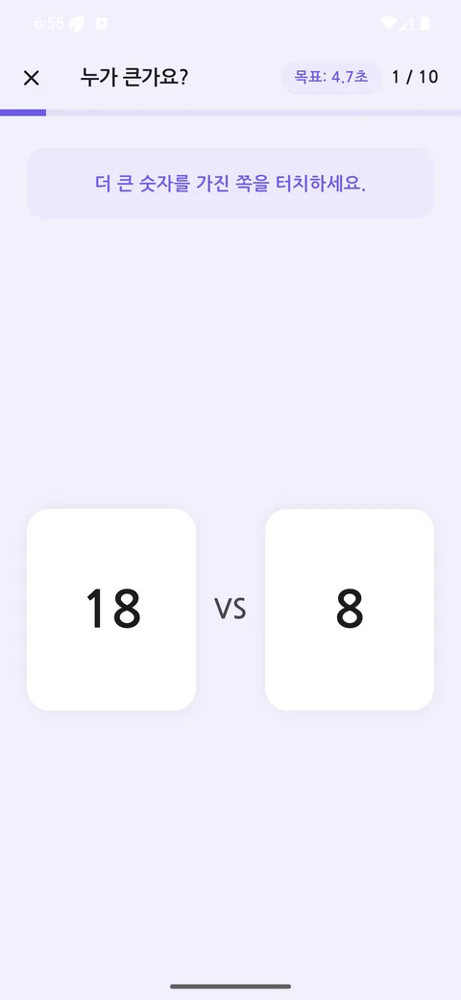
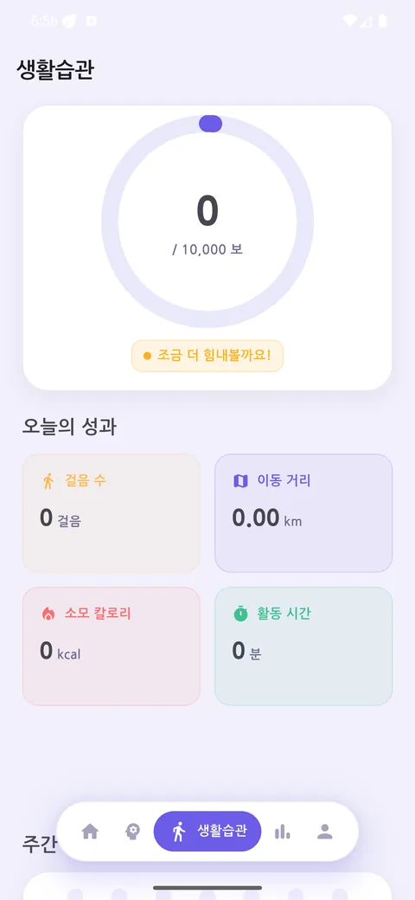
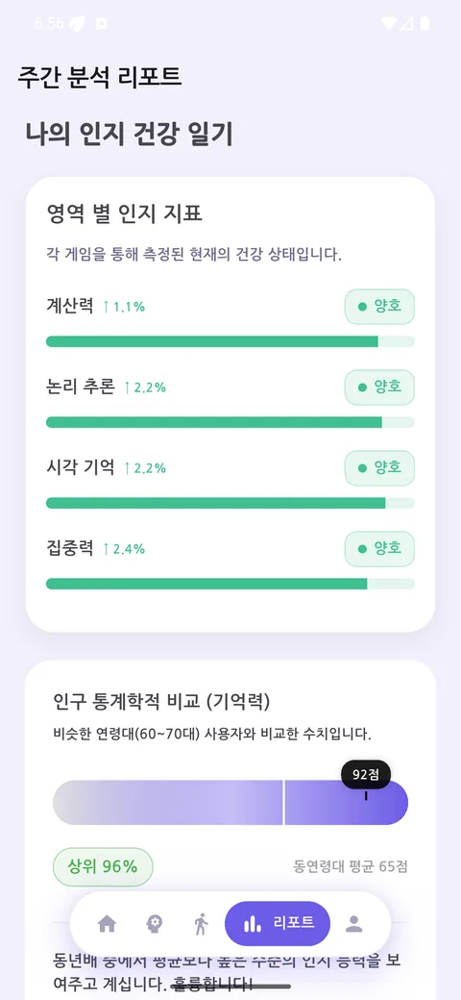
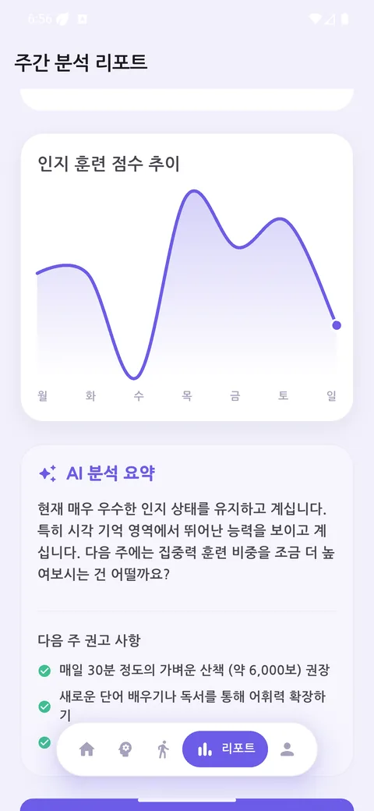
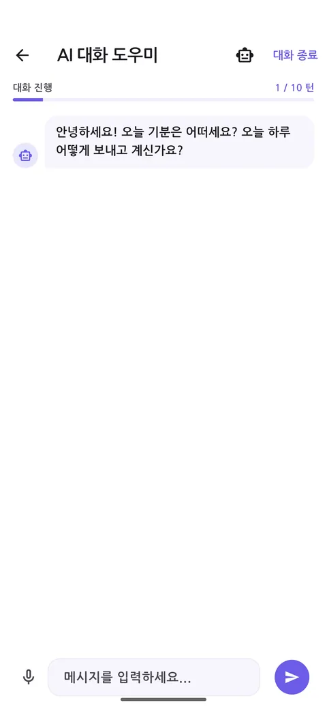
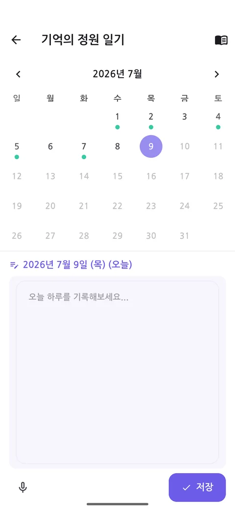
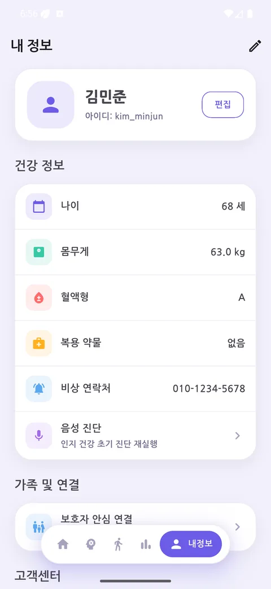
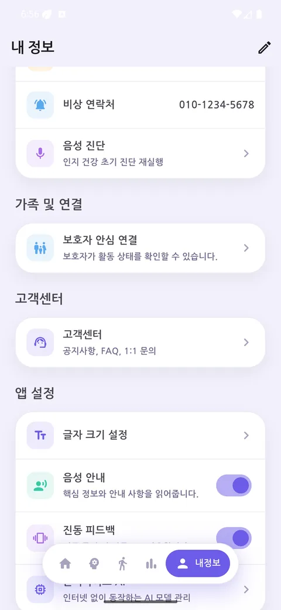

아래는 모두 실제로 앱에 구현되어 동작하는 기능입니다.
매일 조금씩, 부담 없는 분량으로.
센서로 자동 기록되는 하루의 활동.
옛 기억을 함께 꺼내 보는 대화 상대.
달력 위에 쌓이는 하루하루의 기록.
변화를 숫자와 그래프로 되돌아봅니다.
멀리 있어도 오늘을 확인할 수 있게.
도움이 필요할 때 가까운 곳부터.
읽기 쉽고 누르기 쉬운 것이 기본입니다.
궁금한 점은 앱 안에서 바로.
실제 앱 화면입니다. 옆으로 넘겨 보세요.









기록을 다루는 앱이라, 만드는 방식도 검증 가능하게 두었습니다.
| 플랫폼 | Android (minSdk 26) · Flutter 3.41.5 / Dart 3.11.3 |
|---|---|
| 구조 | Provider 상태관리 · GoRouter 라우팅 · sqflite 로컬 데이터베이스 |
| 클라우드 | Firebase 익명 인증 · Firestore · Hosting |
| AI | Google Gemini (회상 대화) · 온디바이스 음성 안내(TTS) |
| 자동화 테스트 | 단위·위젯 테스트 309개 · Maestro E2E 21개 플로우 |
| 정적 분석 | flutter analyze 에러 0 · 경고 0 |
| 접근성 | WCAG 2.2 — 대비 4.5:1 · 터치 영역 56dp · 글꼴 200% 대응 |
공공데이터 출처 — 치매안심센터 정보는 공공데이터포털 국립중앙의료원_치매안심센터 정보를 이용하였으며, 공공누리 이용허락 조건에 따라 활용하였습니다.
본 애플리케이션은 과학기술정보통신부 대학디지털교육역량강화사업의 지원을 통해 수행한 한이음 드림업 프로젝트 결과물입니다.